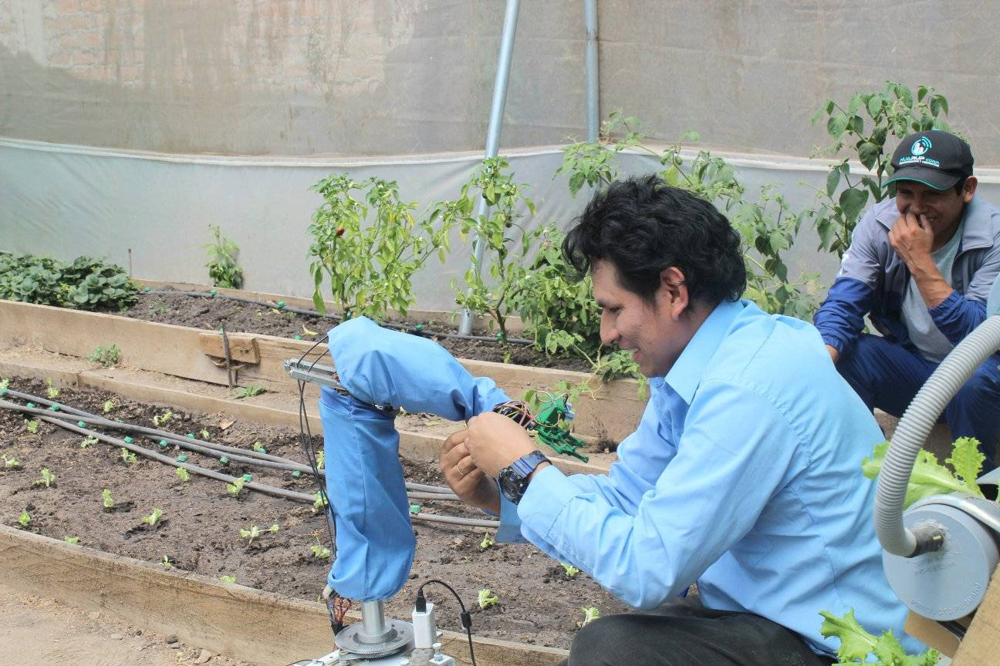
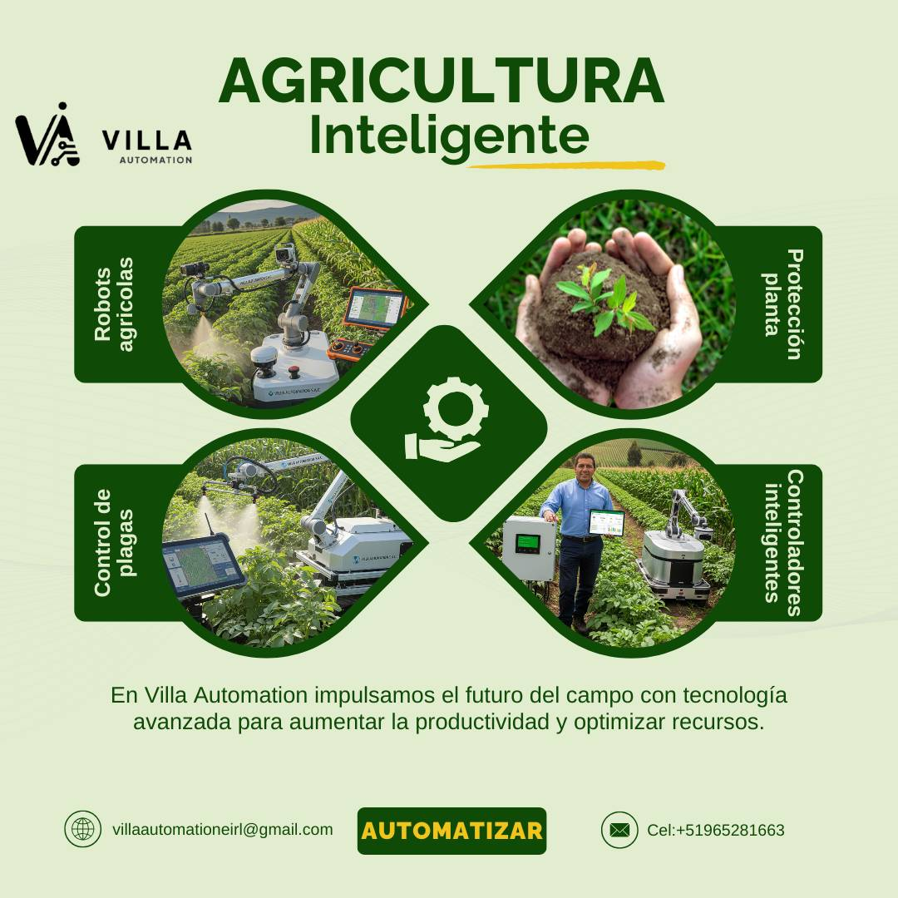
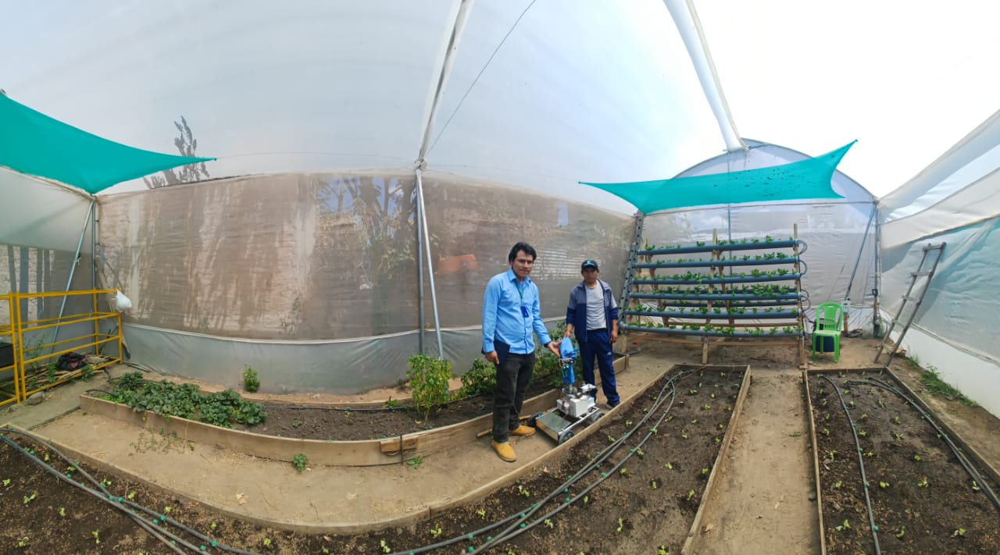
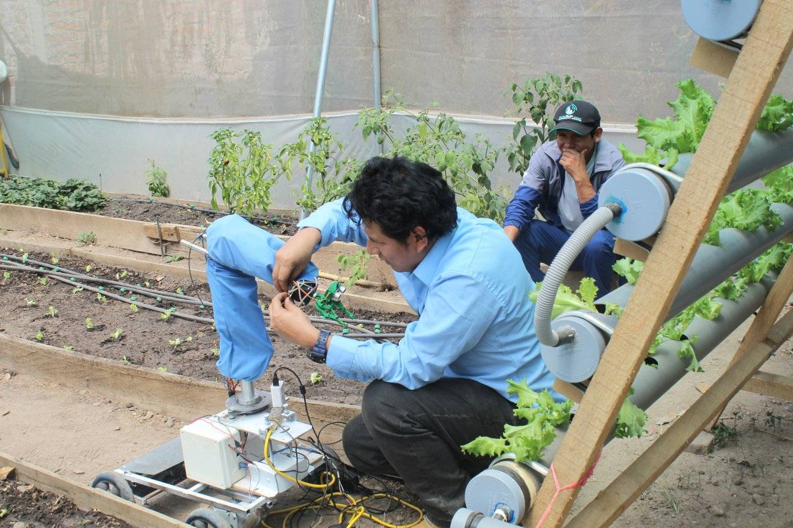
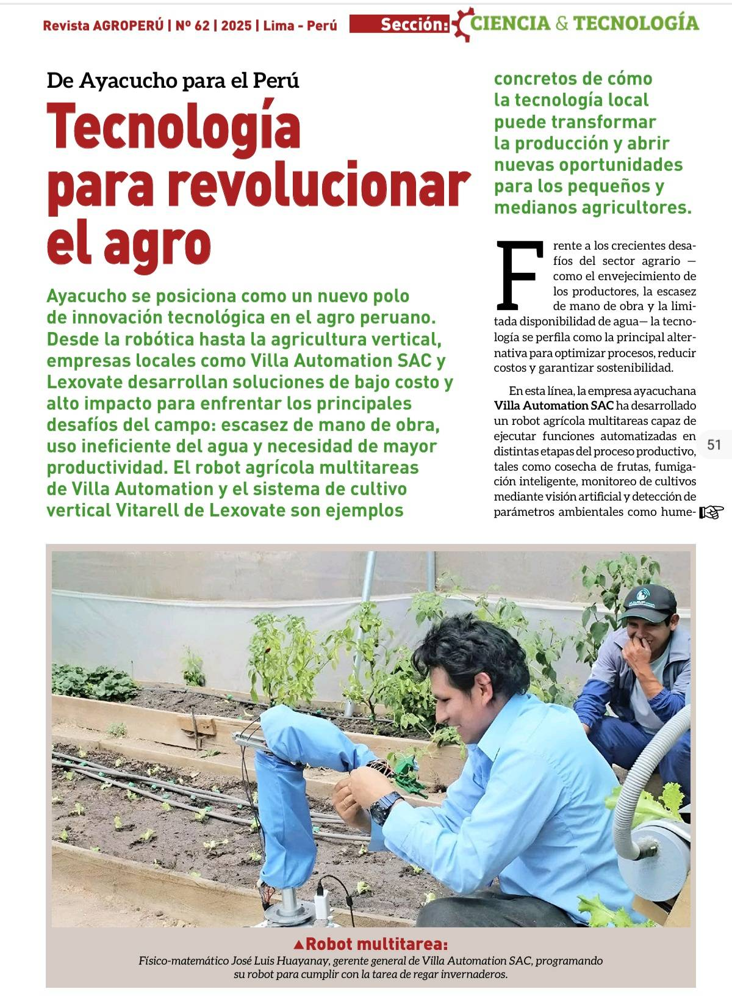

Tecnologia Aeroespacial
En el presente espacio les presentamos la Tecnología Aeroespacial desarrollada por nuestra empresa Villa Automation S.A.C

En Villa Automation SAC desarrollamos robots colaborativos agrícolas diseñados para trabajar junto al agricultor, optimizando tareas, reduciendo costos laborales y aumentando la productividad en el campo. Nuestros robots integran electrónica avanzada, sensores inteligentes y algoritmos de control que permiten operar de manera precisa, segura y autónoma.
¿Qué es un Robot Colaborativo Agrícola?
Un robot colaborativo agrícola (Agri-Cobot) es una máquina diseñada para trabajar mano a mano con las personas en entornos agrícolas. Puede realizar tareas repetitivas, pesadas o de alta precisión, mejorando la eficiencia y reduciendo riesgos. Nuestros Agri-Cobots se basan en tecnologías como:
- Movilidad autónoma (o semiautónoma) en entornos operativos (ejemplo campos de cultivo).
- Brazo robótico con sensores y actuadores: permite manipulación,detección, cosecha y trabajo colaborativo.
- Inteligencia artificial que permite “aprender y optimizar desempeño conforme trabaja”.
- Sensores ambientales (pH, temperatura, humedad, CO₂)
- Sensores disponibles: LiDAR (especificar modelo/rango), cámaras RGB/IR, sensores ultrasónicos, IMU/GNSS.
- Interfaces de comunicación remota: Wi‑Fi, LTE/4G, LoRa, blothoo midiante nuestro app: villa automation:
📲 Descargar en Google Play
Capacidades y Funciones
Se diseña el robot colaborativo con múltiples grados de libertad, utilizando motores, servomotores para cada articulación y unos sensores para la detección de objetos e inspección. Se implementó un control predictivo que anticipa el error futuro y ajusta la posición de cada articulación para mejorar la precisión del movimiento.

- Siembra de precisión: Dispersión uniforme de semillas con regulación automática según el tipo de cultivo.
- Monitoreo ambiental en tiempo real: Lectura continua de pH, humedad, temperatura, gases y calidad de aire dentro de invernaderos o campos abiertos.
- Recolección y manipulación: El robot puede recolectar frutos, levantar muestras de suelo y transportar cargas ligeras.
- Navegación autónoma: Evita obstáculos, Planifica rutas, Se adapta al terreno, Puede trabajar de día y de noche
- Aplicación de riego inteligente: Control de microaspersores, riego por goteo y fertilización con precisión milimétrica

El robot puede realizar movimientos hacia un punto de interés (ejemplo plantaciones) de manera autonoma. Luego el brazo comienza a moverse simultáneamente, ajustando su orientación respecto al entorno, lo que indica una coordinación entre la locomoción y la manipulación. El sistema de control emplea un modelo cinemático acoplado, donde el movimiento del vehículo (plataforma diferencial o 4WD) y el del brazo se sincronizan para mantener el equilibrio y la orientación.

Beneficios para la Agricultura
- Reduce costos de mano de obra.
- Mejora la productividad.
- Disminuye el uso de agua y fertilizantes.
- Incrementa la precisión y la trazabilidad.
- Permite operar incluso en condiciones adversas.

Nuestros robots colaborativos agrícolas son ideales para:
- Invernaderos.
- Cultivos hidropónicos.
- Viveros y producción de plantines.
- Investigación y desarrollo agronómico.
- Automatización de procesos de cosecha y control de variables.
Entrega y Personalización
-
Villa Automation SAC diseña y fabrica robots a medida, según el cultivo, el terreno y las necesidades del cliente.
Incluimos:
- Capacitaciones.
- Manual técnico.
- Garantía y soporte.
- Integración con sensores y módulos adicionales.

Innovación local con alcance global
Villa Automation se fundó en Ayacucho-Perú y desarrolla tecnología desde la región, trabajando en proyectos de robots colaborativos que ya se aplican en invernaderos locales. Diário Jornada Esto te da dos ventajas: Proximidad geográfica: soporte técnico local, adaptado al contexto peruano (clima, cultivos, terreno). Flexibilidad: al no depender exclusivamente de grandes fabricantes globales, pueden adaptar rápidamente soluciones personalizadas para cada cliente agrícola.Integración completa: diseño, fabricación y soporte
Villa Automation no solo vende robots o módulos; su presencia en el desarrollo aeroespacial y de automatización industrial — por ejemplo la línea de cohetes y satélites que ellos mismos desarrollan — aporta un nivel de conocimiento técnico profundo. Concytec Esto significa que puedes obtener: hardware adaptado (sensores, motores, plataformas) software de control (algoritmos de IA, navegación autónoma) soporte y mantenimiento local En comparación, muchas otras empresas agrícolas solo venden un robot estándar o importado, sin adaptarlo al cultivo o terreno local.
Enfoque agrícola-industrial y multidisciplinario
Mientras que algunos proveedores de robots colaborativos se centran únicamente en horticultura o invernaderos, Villa Automation abarca múltiples sectores: agricultura, minería, industria, defensa. Por ejemplo, su robot ya fue probado en invernaderos y también para detección de gases en minería. Diário Jornada Esto les permite aplicar tecnologías de un sector al otro — lo que puede traducirse en mayor robustez, mayor vida útil, mayor adaptabilidad.
Escalabilidad y personalización para mercados emergentes
En el contexto peruano y latinoamericano, los retos son distintos: terrenos irregulares, acceso limitado a repuestos, clima variable, necesidad de bajo costo de operación. Villa Automation entiende ese contexto y puede ofrecer soluciones diseñadas para “la región” en lugar de simplemente importar robots de alto coste pensados para mercados desarrollados. Esta ventaja es particularmente importante frente a empresas internacionales que pueden venir con tecnología de punta pero costes elevados, repuestos difíciles y adaptación limitada al contexto local.
Presupuesto de venta dependera la cantida de sensores y modulos
- Basico: 1000.0 $ (dolares)
- avanzado: 4000.0 $ (dolares)